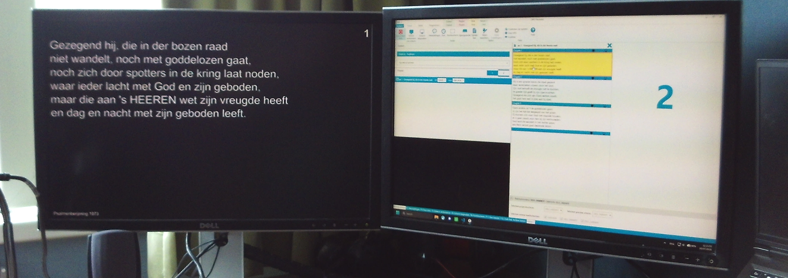
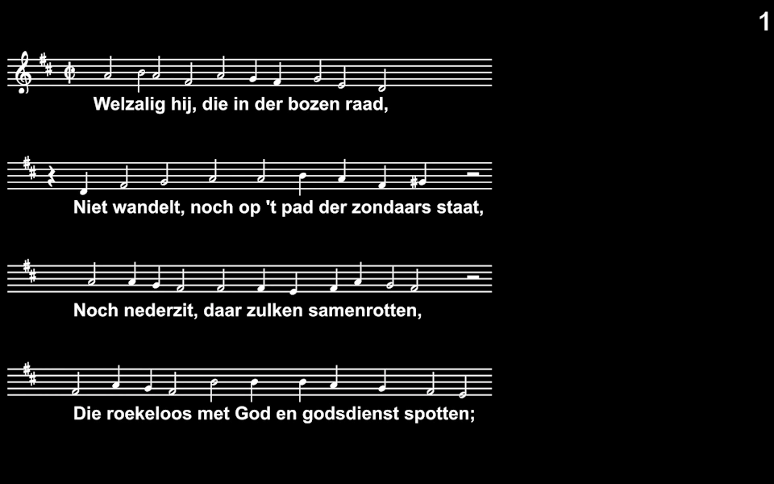
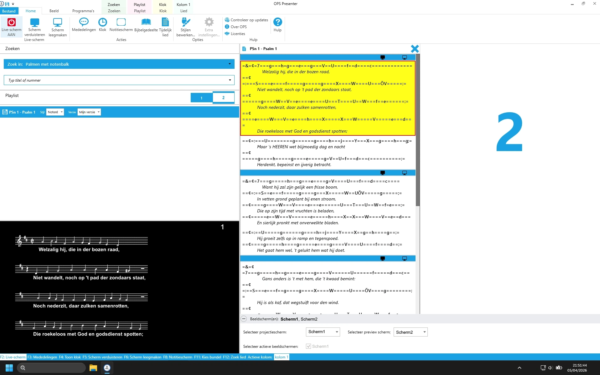

OPS liedteksten
Omschrijving
Een van de grootste irritaties tijdens mijn taak als beeldtechnicus in de kerk is als liedbunels niet beschikbaar, inconsistent of incompleet zijn. De software die wij gebruiken, het Opwekking Projectie Systeem, heeft een beperkte selectie aan liedbundels. Daarom heb ik een programma geschreven dat digitale liedbundels omzet in het formaat dat OPS gebruikt. De C# code gebruit Reguliere Expressies om de liedteksten uit bestaande digitale bundels te halen en deze op te slaan als tekstbestand met alle tags die OPS nodig heeft. Met behulp van deze code heb ik de volgende liedbundels geimporteerd in ops:
- Liedboek voor de kerken
- Sela
- Psalmen oude berijming
- Evangelische liedbundel
- Hemelhoog
- Enkele Engelse liederen
Deze bundels hebben ons beamerteam veel tijd gescheeld met het opzoeken en kopiëren van liedteksten. Helaas kan ik de .ot8 bestanden niet delen omdat ze auteursrechtelijk beschermd zijn, maar mocht iemand geïnterreseerd zijn kun je contact met mij opnemen.
Notenbalken
OPS ondersteunt geen notenbalken. Omdat er een wens was voor noten bij sommige liederen, heb ik enkele experimenten uitgevoerd met noten in OPS door een tweetalig lied te maken met een notenbalk-lettertype als eerste taal. Hierdoor is het mogelijk om noten toe te voegen aan liederen, maar om dit op grote schaal te doen is een uitdaging. Hieronder zijn twee schermafbeeldingen van mijn experiment te zien.

